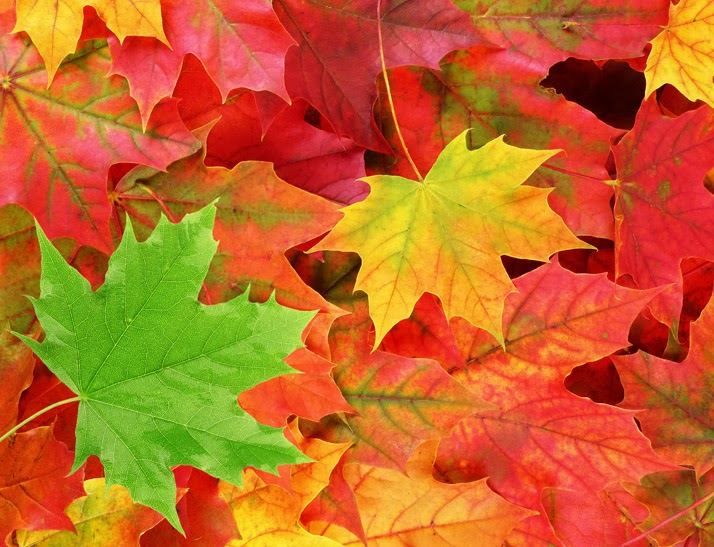
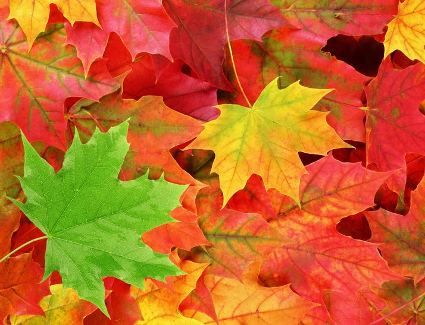

What Happens?
Fall is another name for Autumn. During the Fall, plants and trees start losing their leaves. They start by changing shades and then go on to fall off on their own.


Different kinds of leaves that fall during the Fall.
When is Fall?
The Fall time is from September to December in the Northern Hemisphere and from March to June in the Southern Hemisphere.
Different colored trees due to different colored leaves.
How's the Weather?
The weather in NYC during the Fall is similar to that of the Spring time. The weather is transitioning from crazy hot to crazy cold, so the average temperatures range from around 40-70 degrees fahrenheit. It is recommended to wear something light, but some longer clothing.

Central Park during the Fall.